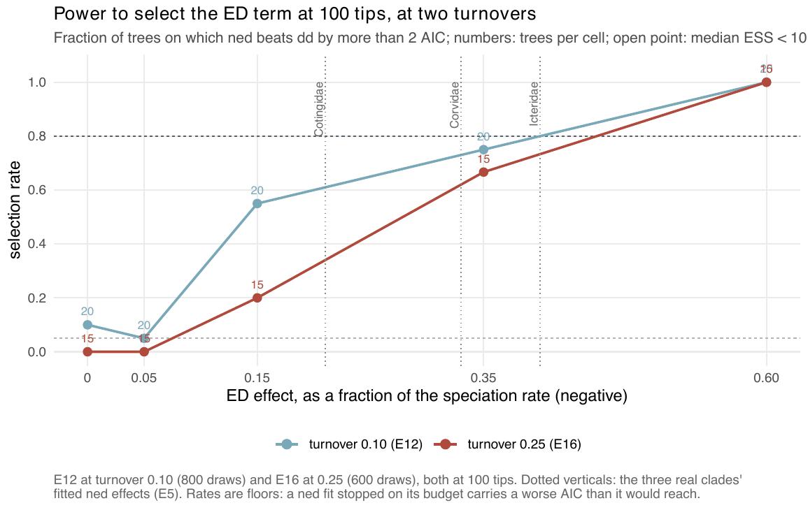

E16 — The power floor where the real clades live (turnover 0.25)
| Status | complete (75 trees, all fitted); superseded by E46 (recovery) and E47 (selection) when they report; E46 does not run turnover 0.25 (Estimability) |
| Package build | library e8, installed at 4f42b27 on 2026-09-20; the build audit found that library identical to a clean build except ned on the thinning proposal |
| Driver / analysis | sim/E12-power.R with --turnover 0.25 --tips 100; figure fig-power-turnover |
| Data | results/E16/power.csv (75 rows) |
Question
E12's power floor was measured at turnover 0.10. The three real clades of E5 sit at turnover ≤ 0.3, and E8's one cell at 0.25 found almost nothing at -0.15\(\lambda\). E16 runs E12's effect grid at turnover 0.25 to see where selection becomes possible at the turnover of the real clades, and whether Corvidae and Icteridae, whose fitted ned effects are -0.33\(\lambda\) and -0.40\(\lambda\), fall on the selectable side.
Design
| parameter | value | meaning |
|---|---|---|
| generator | ned, linear link |
as in E12 |
| ED effect | 0, -0.05, -0.15, -0.35, -0.60 \(\lambda\) | fraction of \(\beta_0 = 0.5\) at one clade-mean unit of ED |
| tips | 100 only | where fits complete |
| turnover | 0.25 | |
| trees per cell | 15 | 75 trees |
| candidates | dd, ned |
|
| draws, iterations | 600, max_iter 100 |
|
| proposal, box | surrogate; sim/box.R |
Observed tips: median 83, 101, 97, 103 and 63 from effect 0 to -0.60\(\lambda\). At -0.60\(\lambda\) the capacity was set at 2500 and the clades still came out at a median 63 tips: the effect caps the clade.
Pre-set rule
00-design.md §E16: the 0.80 contour, and whether Corvidae (-0.33\(\lambda\)) and Icteridae (-0.40\(\lambda\)) fall on the selectable side of it. Cells with median effective sample below 10 are reported and excluded from the contour, as in E12.
Results
| effect | selection (ned over dd by > 2 AIC) |
ratio \(\hat\beta/\beta\) | right sign | median ESS of 600 | fits < 10 | stops conv/cap/clock |
|---|---|---|---|---|---|---|
| 0 | FP 0.00 (0 of 15) | median \(\hat\beta\) +0.0087 | — | 208.8 | 0 | 0/7/8 |
| -0.05\(\lambda\) | 0.00 | 0.35 | 0.73 | 123.4 | 1 | 0/2/13 |
| -0.15\(\lambda\) | 0.20 | 1.05 | 0.73 | 100.7 | 1 | 0/3/12 |
| -0.35\(\lambda\) | 0.67 | 0.84 | 1.00 | 28.2 | 1 | 0/2/13 |
| -0.60\(\lambda\) | 1.00 | 0.60 | 1.00 | 65.8 | 3 | 0/6/9 |
No cell is sampler-limited. No fit met the stopping rule; 53% to 87% of fits per cell ended on their clock, so the cells are clock-limited by the later convention and the rates are floors. The supplement quotes the -0.15\(\lambda\) ratio as 1.06; the file gives 1.055.
Beside E12 at 100 tips and turnover 0.10 (0.05 / 0.55 / 0.75 / 1.00 from -0.05 to -0.60\(\lambda\)), the selection rate at turnover 0.25 is lower at every effect below -0.60\(\lambda\) (0.00 / 0.20 / 0.67 / 1.00).

ned over dd at 100 tips, turnover 0.10 (E12, blue) and 0.25 (E16, red), with the three real clades' fitted effects as dotted verticals. At turnover 0.25 the line is at 0.67 at -0.35\(\lambda\) and reaches 0.80 only at -0.60\(\lambda\); Corvidae (-0.33\(\lambda\)) sits left of the -0.35\(\lambda\) grid point.Conclusion
At turnover 0.25 and 100 tips the 0.80 contour lies between -0.35\(\lambda\) (0.67) and -0.60\(\lambda\) (1.00), as at turnover 0.10, with no false positive in 15 null trees. Corvidae (-0.33\(\lambda\)) lies on the weaker side of -0.35\(\lambda\), where selection is 0.67, so it is not on the selectable side. Icteridae (-0.40\(\lambda\)) lies between the two grid points, and the grid does not place it on either side. The coefficient is recovered at 0.84 and 1.05 of its value at -0.35 and -0.15\(\lambda\), and at 0.60 at -0.60\(\lambda\), where the effect also shrinks the clades to a median 63 tips. The rates are floors on unfinished fits; the real clades' own question was taken up by the parametric bootstrap (E17).
Its trees come from linear-link ned generators and the raw-ED simulator before f30a791, whose effect on these generators is not recorded, and its fits are unconditioned and unfinished; E46 measures recovery under the conditioned likelihood and E47 selection on a grid of effects (Estimability).